bgdude user guide
A page-by-page walk-through of every screen, panel and icon — what it's for and how to use it. bgdude reads your t:slim X2 and CGM, pulls health data, predicts glucose and advises on dosing. It is read-only: it never delivers insulin — you always dose on the pump yourself.
Getting started
First launch runs a short onboarding, then you land on the Today tab.
Onboarding (4 steps)
- Intro — what the app does.
- Before you pair — you must tick the acknowledgement: pairing with the pump unpairs the official t:connect app, the connection is reverse-engineered (can be finicky), and the app never sends insulin/control commands.
- About you — pick your glucose units (mmol/L or mg/dL) up front so every reading shows the way you think about your numbers, plus an optional profile (sex, age, diabetes type/duration, weight, height). You can skip the profile and set it later in Profile, and change units any time in Settings.
- Get connected — the final gate. You can't finish until you either pair your pump or choose demo mode. "Pair your pump" scans over Bluetooth and prompts for the pairing code; "Use demo mode" runs the app on simulated data. Pairing also grants Health Connect + pump/notification permissions.
On Android 12 and below, Bluetooth scanning also needs the phone's system Location toggle switched on (a location permission alone isn't enough on these versions) — if it's off, pairing tells you so directly rather than just finding no devices. If a permission is denied permanently ("don't ask again"), the message that appears offers an Open settings button straight to the app's permission screen instead of repeating the same prompt.
App layout & icons
A top bar with quick actions, and a bottom bar with the four main tabs.
Top bar (right side)
| Icon | What it does |
|---|---|
| ⊕ add-circle | Open the Quick-log sheet (carbs, bolus, exercise, alcohol, stress, mood, illness, sensor/site change). |
| ⚙ settings | Open Settings — every screen below that isn't a tab lives here. |
| DEMO + Exit demo | Shown only in demo mode (simulated pump). The Exit demo button switches back to your real pump. |
Bolus button
On the Today tab a Bolus button (calculator icon) opens the Bolus advisor. It's hidden on other tabs to keep dosing tied to the live reading.
Bottom tabs
| Tab | Purpose |
|---|---|
| 📅 Today | Your day at a glance: current glucose, forecast, and the event stream you review and tag. |
| 📈 Predict | Every model's forecast, scenarios and a what-if explorer. |
| 💡 Insights | Daily briefing, sensitivity, A1c, sleep, illness — read together. |
| 🍽️ Meals | Your saved-meal library and the add-meal flow (incl. barcode scan). |
Home-screen widget
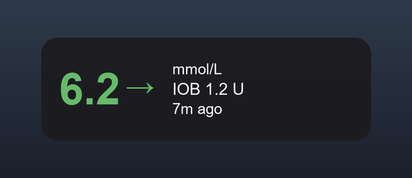
Add the bgdude widget to your Android home screen to see your latest glucose without opening the app. Long-press the home screen → Widgets → bgdude, and drop it in (it's a 2×1 cell and resizes).
What it shows
- Glucose + trend arrow in your chosen unit (mmol/L or mg/dL — it follows the in-app setting), colour-coded by range: green in range, red below 70 mg/dL (3.9), orange above 180 mg/dL (10.0).
- IOB — insulin on board — and how long ago the reading was taken ("7m ago").
- If the reading is missing or older than 15 minutes it greys out and reads "Stale · Xm ago" (or "no data"), so a frozen number never looks current.
- Tap the widget to open the app.
Garmin watch
bgdude pushes your glucose to a Garmin watch over the free Connect IQ Mobile SDK (the same phone→watch path xDrip+ uses — no paid Garmin Health API).
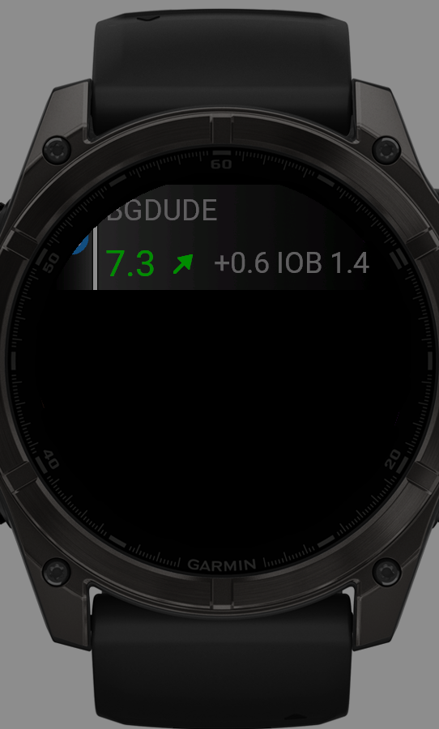
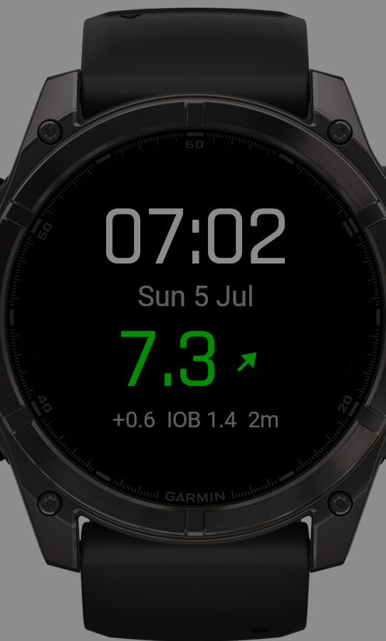
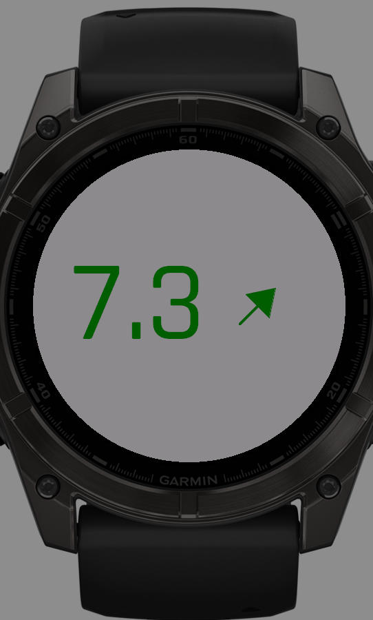
Rendered in the Connect IQ simulator (fēnix 8) with a sample reading.
Three ways to see it on the watch
- Widget (+ glance) — a full panel: unit, range-coloured BG with trend arrow, delta + reading age, and IOB / pump battery / reservoir. The glance is a one-liner (7.3 → +0.6 IOB 1.4).
- Watch face — time + date with a range-coloured BG line (value, trend, delta, IOB/age); drops per-second work in low-power mode.
- Data field — range-coloured BG on an activity screen, font auto-scaled to the field size.
- All three share one source of truth for units, range colours (red < 70 mg/dL, green 70–180, amber > 180) and the trend arrow, and follow your in-app unit (mmol/L or mg/dL). Data older than 15 minutes greys out and is marked "(stale)".
- The widget receives phone pushes in the foreground; the watch face and data field can't, so they use a small background service that stores each reading for the view to pick up. Readings are queued by Connect IQ, so the last value shows the moment the view refreshes even if it arrived while closed.
Today
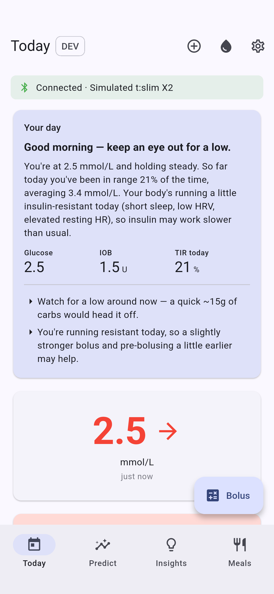
Your Day panel
A plain-language narrative of how the day is going — current stats, trends and a suggestion or two. Read it first thing.
Glucose & "Next few hours" chart
- The big number is your current glucose with its trend arrow.
- The Next few hours chart shows a trailing CGM trace leading into the forward forecast. The y-axis is glucose in your chosen unit (mmol/L or mg/dL); the dashed vertical line is now; the green band is your target range; the x-axis marks -2h, now, +2h. A small legend names each line.
- Below it, an On board chart projects the insulin (IOB) and carbs (COB) already working — plus your scheduled basal — over the next few hours. These are the drivers behind the glucose forecast. Insulin reads on the left axis (U, U/h), carbs on the right (g).
- Tip: touch-and-hold anywhere on a line to read the exact time and value (with units) in the tooltip; on the scenario chart the tooltip names each line.
Rescue-carb card
Appears only when you're low or a low is predicted. It suggests fast carbs (≈15 g, adjusted for insulin-on-board and the predicted nadir), using the same effective low line as your alerts — so after alcohol, during exercise, or in hot/cold weather it leads earlier, exactly when an alert would. Informational — act on the pump/with food yourself.
The event stream (timeline)
Scroll down for the day's events — meals, boluses, highs/lows, detected unannounced rises, and compression lows. Each card can do two things:
- Explain this — opens ranked, plain-language reasons for a high/low/rise you can accept with one tap.
- Tag (use for model) — tap to tell the model how to treat the event. A smart default is already applied: pump dosing (meals, boluses) is used by default; a suspected compression low is excluded by default. The reasons offered are contextual to the event type — a compression low is never offered "missed carbs".
Predict
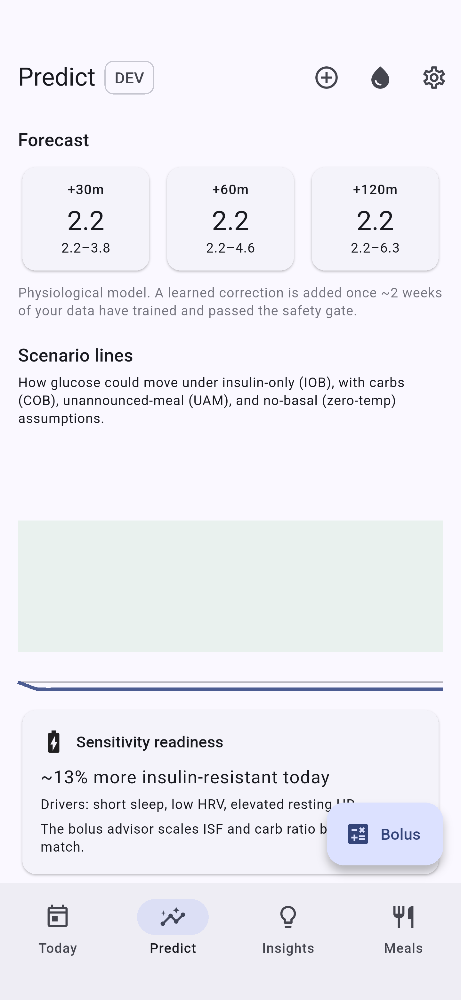
- Horizon forecasts (30 / 60 / 120 min) with uncertainty bands — a physiological baseline plus a learned correction once trained.
- Predicted low/high duration — when the forecast crosses your low (70) or high (180) line, a card reads "Predicted low for ~25 min" (or high) — the clinically actionable question a single point forecast can't answer: treat now, or ride it out. Derived from the forecast trajectory across all three horizons, not just one point. If the less-severe edge of the uncertainty band would resolve it sooner, a note adds "(at least N min likely)" so you know how much of that duration you can really count on. Hidden when nothing is predicted to cross either line.
- Band trust chip — beside the "Forecast" heading, once enough predictions have been scored, a Band NN% chip shows how often (over the last 7 days) your actual reading landed inside the forecast band. A well-calibrated band catches most readings; a low number means take the band with a pinch of salt.
- Scenario lines (in Advanced mode) — the same glucose forecast under four different assumptions about what's driving you: IOB (insulin only), COB (insulin + logged carbs), UAM (an unannounced meal is pushing you up), and Zero-temp (basal suspended). They spread apart because the assumptions differ — the gap is the uncertainty. The bold Predicted line is the best single estimate. A colour legend labels each, and tapping the chart shows every line's value (named, with units) at that moment. An On board chart of projected IOB/COB/basal sits below.
- Sensitivity & risk read-outs — today's resistance multiplier and near-term low/high risk with a suggested action.
- What-if explorer — sliders for carbs and insulin to project the trajectory before you decide.
- Control-IQ aware. When the pump reports the closed loop is active, the forecast folds in its automatic basal changes and corrections — pulling projected highs and lows back toward the mode's target band (tighter in Sleep, higher in Exercise) instead of assuming an open loop. Rescue-carb advice uses the same softened forecast.
Insights
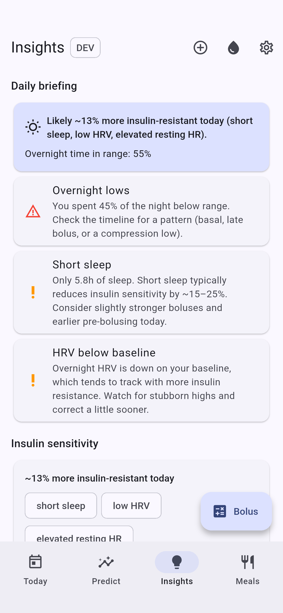
Daily briefing
The morning summary: overnight time-in-range plus prescriptive, evidence-grounded notes ("consider bolusing a touch stronger").
Insulin sensitivity
Today's resistance multiplier and its drivers (short sleep, low HRV, illness, exercise, medication…). >1 = more resistant than your settings; <1 = more sensitive.
A1c goal & Lab A1c
- Your GMI (CGM-derived A1c estimate) vs your goal, with a projection. Tap Change to set the goal.
- Log lab A1c — enter a lab HbA1c result; the app compares it to your GMI and flags a glycation gap (some people's lab result runs systematically higher/lower than their average glucose predicts).
Sleep & glucose
How your sleep length relates to overnight steadiness, learned from your own nights.
Models
- BG forecaster — status of the glucose-forecast model: a deterministic baseline runs from day one; a learned personal correction trains overnight once roughly two weeks of data pass the safety gate.
- Sensitivity model — status of the model behind Insulin sensitivity above: learns how sleep, HRV, exercise, cycle and illness shift your insulin needs, using a transparent heuristic until it's trained.
Illness mode no longer lives here — it's auto-suggested in Confirm events and toggled from Quick-log. See Illness mode.
Meals
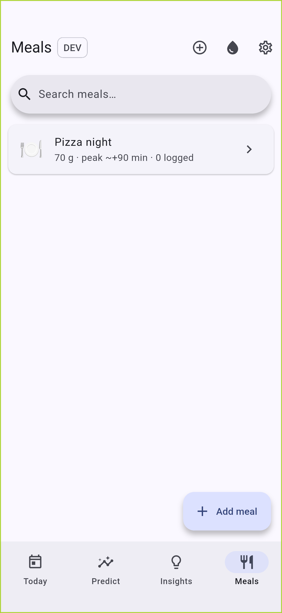
The library
Meals you eat often, each learning its own absorption curve and typical outcome over time. Search with the bar at top; tap a meal for its detail screen.
Add a meal
Tap Add meal. In the sheet you can:
- Scan barcode — point the camera at a product; carbs (and fat/protein) fill in from the food database.
- Search foods — type a name to look it up (packaged products + a bundled offline Australian generic-food set).
- Scan nutrition label — photograph the nutrition panel (the facts table, not the food). The label text is read on-device (OCR; the photo never leaves your phone), the carbs/fat/protein/serving are parsed out, and — for unusual or foreign layouts — an optional small on-device AI model (Gemma, downloaded from Settings → Nutrition-label AI) can normalise the reading. It's a reading aid: values land in the editable fields for you to confirm, and it never doses anything by itself.
- Every looked-up value lands in an editable field — correct anything the database got wrong, or adjust to your portion. Fat/Protein (optional) feed the fat-protein-unit coach.
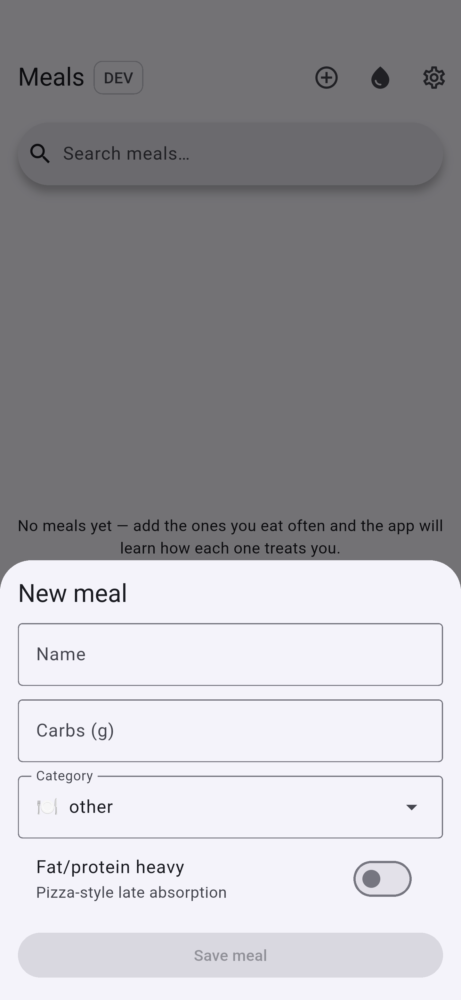
Meal detail & pre-bolus coach
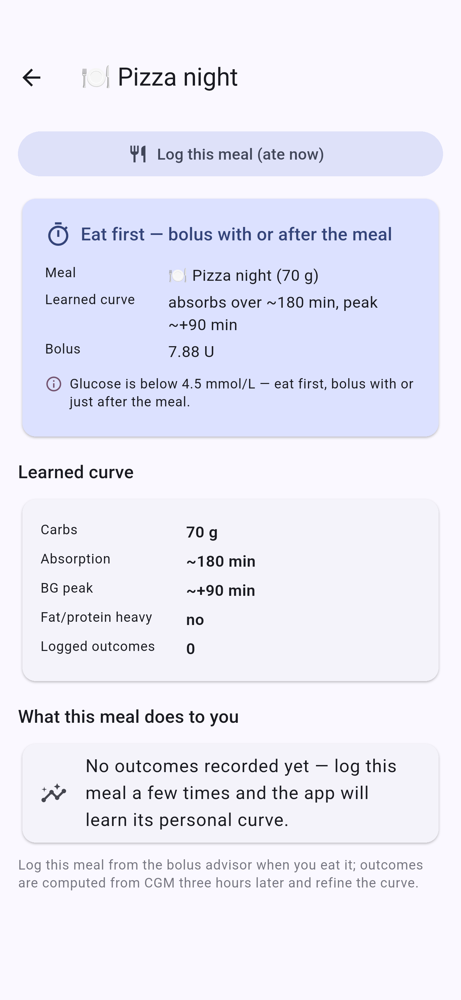
- Log this meal — records that you ate it; the app measures the outcome ~3 h later and refines the curve.
- Pre-bolus coach — from the live reading, how many minutes to pre-bolus. Its safety guard uses the same effective low line as your alerts (age, alcohol, exercise and weather modifiers included), so it never advises waiting into a situation the app would alert on.
- Fat/protein card — for fat/protein-heavy meals, a split/extended-dose suggestion and a delayed-rise watch (3–5 h).
- Insights & recent outcomes — median peak, time-above-range, and whether pre-bolusing has helped this meal.
Bolus advisor
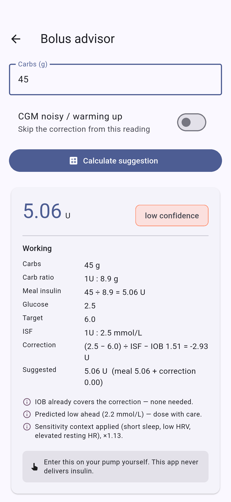
Open it from the Bolus button on Today. Enter carbs (and it reads your current glucose + IOB); it suggests a dose and always shows the working — BG, target, ISF, carb ratio, IOB and the context multiplier.
- Fat & protein. Optionally add the meal's fat/protein — either exact grams, or a quick load picker (None / Low / Med / High) when you don't know the grams. The advisor works out the fat-protein units and suggests an extended dose (e.g. "+2.5 U over 5 h") to cover the delayed "pizza effect" rise — shown separately from the dose-now figure, since it's best given as a combo/dual-wave bolus. It also flags the delayed rise and a possible later low.
- It leans conservative near predicted lows and never suggests a negative dose (that's a rescue-carb situation).
- Control-IQ aware. When the closed loop is running it also corrects highs and eases off for lows automatically. So in Standard/Exercise mode the advisor halves a standalone correction (to avoid stacking with the pump's auto-corrections) and says so; in Sleep mode — where Control-IQ won't auto-correct — it keeps the full correction and flags that a manual one may be needed.
- It never delivers insulin — enter the dose on your pump yourself.
Quick-log
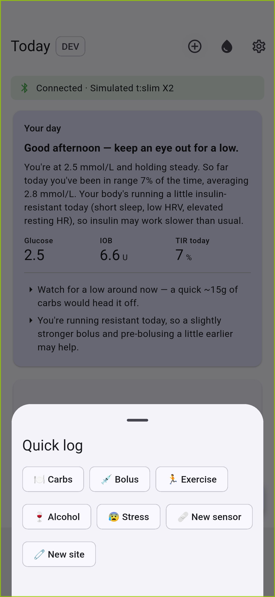
The ⊕ button in the top bar. Log the things the models want to know:
- Carbs / bolus you took (that the pump didn't capture).
- Wellbeing — exercise, alcohol, stress, mood (great/ok/low), and illness. Logging alcohol also opens an overnight-low watch (alcohol causes delayed lows) and a heads-up.
- 🤒 Illness — turn illness mode on/off here (pick Mild / Moderate / Severe). It raises expected insulin needs while sick and tags the period for the models; end it when you're better. The app also auto-suggests illness in Confirm events when your data looks illness-like.
- Sensor / infusion-site change — resets the age tracker used for reminders and the site-failure story.
Confirm events
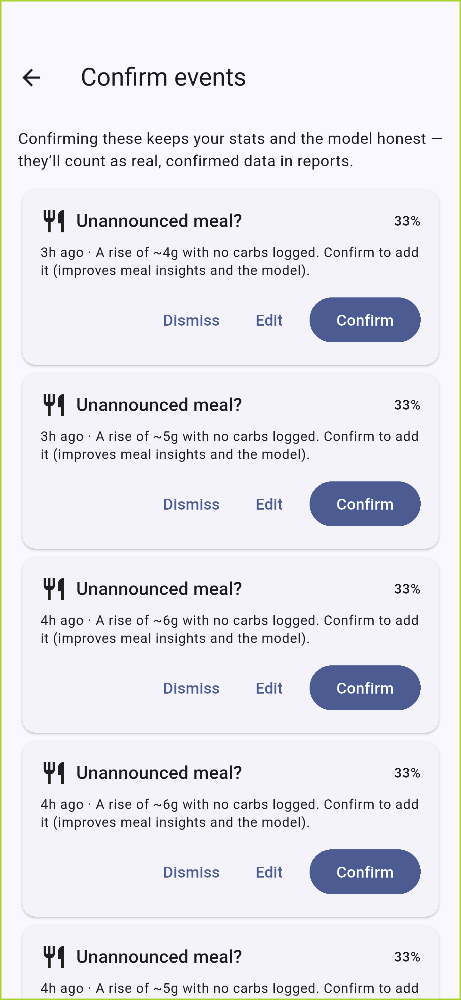
Settings → Confirm events (a badge shows how many are waiting). The app queues detected-but-unconfirmed events — unannounced meals, compression lows, illness, and a likely infusion-site failure (a stubborn high on an old site) — for a one-tap decision.
- Confirm — counts it as real, confirmed data in reports and teaches the model correctly (and adds a meal's carbs to history).
- Edit — adjust a detected meal's carbs before confirming.
- Dismiss — it won't come back.
Exercise mode
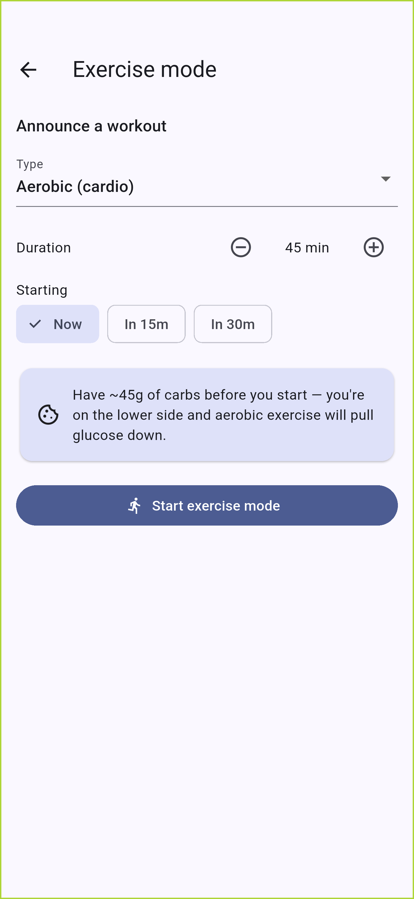
Settings → Exercise mode. Tell the app about an upcoming or current workout so it can be proactive.
- Pick a type (aerobic / resistance / mixed), a duration, and when it starts.
- It raises the low-alert threshold for the session plus a recovery tail (longer for aerobic), so lows are caught earlier during and after.
- Predicted-high nudges are muted during an announced workout (glucose commonly drifts down while exercising, so a predicted-high alert is just noise) — low and urgent-low alerts are never suppressed.
- It suggests a pre-exercise snack from your live glucose / insulin-on-board, and arms the overnight-low watch.
- Tap End exercise mode when you're done (it also expires on its own).
Medication / steroid mode
Settings → Medication / steroid mode. Steroids raise insulin needs, often a lot.
- Turn it on while you're on a course; pick an intensity (mild / moderate / high → +15 / 25 / 40% resistance).
- The whole app then expects more resistance in its sensitivity, dosing hints and insights, and tags the period for the models — same as illness mode — so a medication course doesn't mislead training. Turn it off when the course ends. Advisory only — it never changes your pump.
- It also auto-expires after 14 days if you forget to turn it off, so a finished course can't keep inflating expected insulin needs indefinitely — you'll get a notification when that happens (see Notifications).
Illness mode
Sick days raise insulin needs, so illness mode boosts the models' expected resistance while it's on and tags the period so a sick day doesn't mislead training.
- Auto-detected. When your data looks illness-like (fever, raised resting heart rate, low HRV, dropped steps, higher glucose), the app raises a suggestion in Confirm events (and a notification). Confirm turns illness mode on; Dismiss clears it.
- Turn it on yourself from Quick-log → 🤒 Illness — pick Mild / Moderate / Severe (how much to boost). Tap it again to End illness when you're better.
- While a sustained high coincides with illness (or a likely site failure, or being very high with little insulin on board), a Check ketones alert fires with sick-day guidance.
- It also auto-expires after 7 days if you forget to end it, so a resolved illness can't keep inflating expected insulin needs indefinitely — you'll get a notification when that happens (see Notifications).
Weather
Settings → Weather. Opt-in ambient-temperature context (free, no account).
- Type your city and tap search — it's geocoded once and stored.
- Hot weather speeds insulin absorption (more lows) and cold has a paradoxical risk, so at temperature extremes low alerts lead a little earlier.
- Daily temperature is also correlated against your glucose in the Correlations report.
Notifications
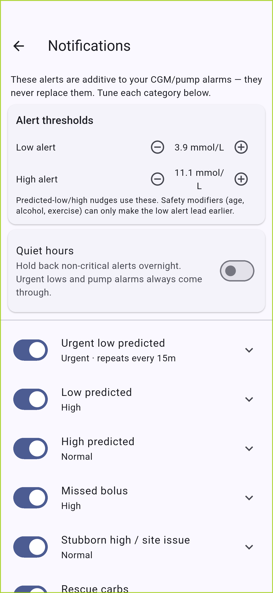
Settings → Notifications. Every alert is a category you control. All alerts are additive to your CGM/pump alarms — never a replacement.
Alert thresholds
Set your own low and high alert lines with the −/+ steppers (shown in your unit). Safety modifiers (age, alcohol, exercise, hot/cold weather) can only make the low alert lead earlier, never later.
By time of day. These are your all-day lines by default. Turn on Overnight (23:00–07:00) to warn earlier while you sleep, and/or Post-meal (first 2h after carbs) to tolerate the expected bump so you're not nagged after eating — each with its own low/high steppers. A segment you leave off simply uses the all-day lines, and post-meal takes precedence over the overnight window if you've just eaten. Your urgent-low line is a single safety value that stays the same across all segments.
Quiet hours
A do-not-disturb window that holds back non-critical notifications overnight. Urgent/predicted lows, rescue carbs, the ketone check and pump alarms always come through. Toggle it on and set the From/To times.
Per-category controls
Every alert below is its own category you can tune: on/off, intensity (silent → urgent), sound, vibration, and a repeat-until-clear interval (Once / every 5 / 15 / 30 / 60 min). Categories marked † always come through even during quiet hours.
Glucose & care (real-time, fired the moment a reading suggests it)
| Alert | Fires when | Default |
|---|---|---|
| Urgent low predicted † | A severe low is predicted soon. | Urgent · repeats every 15 min until it clears |
| Low predicted † | A low is predicted within the forecast horizon. | High |
| Rescue carbs † | You're low/heading low and should take fast carbs now — with a gram estimate. | High |
| High predicted | Glucose is trending above your high line. | Normal |
| Missed bolus | A meal-sized rise with no bolus logged. | High |
| Stubborn high / site issue | High for hours with insulin doing little — possible infusion-set failure. | Normal |
| Check ketones (sick day) † | A sustained high plus a ketone risk factor (illness, likely site failure, or very high with little insulin on board). | High · re-reminds hourly |
| Unusual pattern | The catch-all: glucose is moving faster than your carbs and insulin explain, and none of the named alerts above fit — an early heads-up that something out of the norm is happening (unannounced meal, sensor/site trouble, stress, illness onset). | Normal |
| Move after meals | A post-meal spike is predicted and you're not already moving — a nudge to walk. | Low |
| Overnight low risk | Tonight/tomorrow carries a higher low risk (after alcohol or aerobic exercise). | Normal |
| Illness detected | Your data looks illness-like (persistent unexplained highs / resistance). | Low |
| Sick day / medication mode ended | Illness mode or medication mode auto-expired (you forgot to turn it off) and dosing hints reverted to normal — the same signal you get when one is auto-detected. A manual End illness/turn-off doesn't notify, since you already know you ended it. | Low |
Pump & device
| Alert | Fires when | Default |
|---|---|---|
| Pump alarms † | An alarm/alert is active on the pump (mirrored through, in plain language). | High |
| Low reservoir | Insulin is running low (~15 U) — plan a cartridge change. | Normal |
| Low pump battery | Battery is low or predicted to run out soon (e.g. "won't last the night") — earlier than the pump's own alarm. | Normal |
| Readings stalled | Readings stopped arriving for ~15 min even though the pump link looks healthy (e.g. the sensor came off) — predictions and app alerts are running blind on stale data. | High |
| Pump disconnected | No pump data for ~10 min — readings and predictions are paused. | Normal |
| Sensor / site reminders | Your CGM sensor or infusion site is overdue for a change. | Low |
Digests & timers
| Alert | Fires when | Default |
|---|---|---|
| Morning summary | A daily briefing at 07:00 — overnight time-in-range plus prescriptive notes. A background job posts it even on days you don't open the app. | Normal |
| Weekly report | A weekly nudge (Mon 08:00) that your report is ready to review. | Low |
| Pre-bolus timer | The pre-bolus countdown you started for a meal is up — time to eat. Survives the app being backgrounded, and fires exactly on time when Android's “Alarms & reminders” permission is allowed (otherwise it may drift a few minutes in deep sleep). | High |
Reports
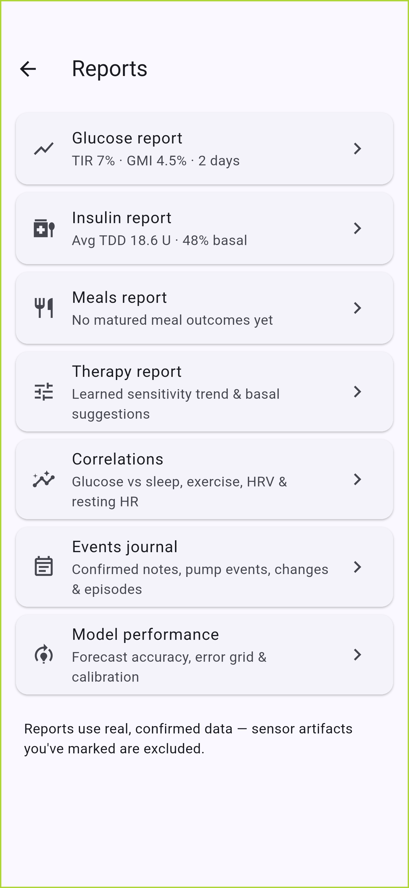
Settings → Reports. Every report is built on real, confirmed data (sensor artefacts you marked are excluded) and takes a date range — tap the 7/14/30/90-day chips.
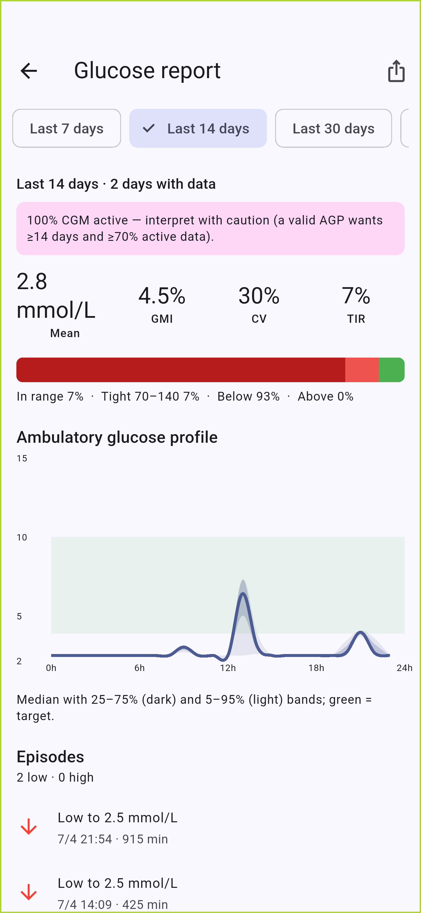
| Report | What it shows / how to use |
|---|---|
| Glucose | Ambulatory Glucose Profile (median + percentile bands), Time in Range & Tight Range (70–140), GMI, CV (amber if ≥36%), risk indices (GRI, LBGI/HBGI), and hypo/hyper episodes. Tap the share icon (top right) to export a clinician-ready PDF + CSV. The clinic-visit prep icon (stethoscope, top right) opens a plain-language summary of the period plus a short list of suggested questions to ask — drawn from your own numbers (low time, high time, variability) against the consensus targets — which you can Share as a PDF to take to your appointment. It's generated from your data with no model needed. |
| Insulin | Daily total insulin (basal + bolus bar chart), the basal/bolus split, and bolus behaviour (meal vs manual correction vs Control-IQ auto-bolus, size, frequency) — loop microboluses are counted separately so they don't read as your own corrections. |
| Meals | Per-meal performance from confirmed outcomes — rise, time-to-peak, time-above-range, pre-bolus timing — plus a post-meal movement note. |
| Therapy | Learned daily sensitivity trend, the time-of-day profile, and a link to Basal suggestions. |
| Correlations | Daily glucose vs sleep, exercise, HRV, resting HR, (if set) ambient temperature, and — once you've tagged your mood (great/ok/low) on at least eight days — mood; plus a menstrual-cycle panel. Only associations backed by enough days are shown. |
| Events journal | One filterable timeline of confirmed notes, pump events, device changes and episodes — a clinic-visit log. |
| Model performance | Forecast accuracy by horizon (RMSE and MARD — Mean Absolute Relative Difference, the field-standard CGM/forecast accuracy number; published devices/algorithms are usually quoted around 9–10%), Clarke error-grid zones, interval calibration and training history (kept separate from your real numbers). If recent forecasts have sustained-missed by more than the model expects, a "Forecast accuracy is drifting" banner appears at the top and a retrain is requested automatically — no action needed. |
Pump
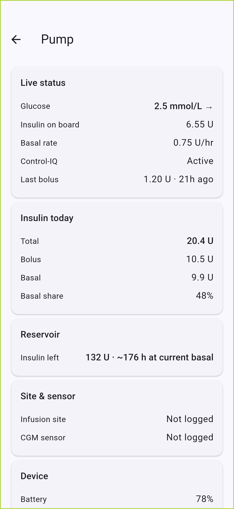
Settings → Pump. A read-only view of live and derived pump data:
- Live status — glucose + trend, insulin-on-board, basal rate, last bolus, and Control-IQ which shows the closed loop's state and current mode (e.g. "Active · Sleep").
- Safety limits — the pump's own configured max bolus and max basal rate. The bolus advisor never suggests more than your pump's max bolus.
- Insulin today — total, bolus/basal split.
- Reservoir — units left + a runway estimate.
- Site & sensor — age since last change.
- Device — battery (with a time-to-empty estimate or "charging"), firmware, API version.
- Active alarms/alerts and a recent pump-events timeline.
Protocol Explorer developer
Settings → Developer → Protocol Explorer. The Explorer lives in the Developer menu (a tucked-away home for low-level, read-only diagnostics) rather than the main Settings list. The whole Developer menu — and the raw protocol logcat dump behind it — appears in debug builds only; release builds don't show it. It's a console for probing the t:slim X2 Bluetooth protocol on a live pump — used to discover and verify pump reads the app doesn't otherwise surface. It has two tabs:
- Requests — a grouped catalog of every read the pump supports (core status, documented opportunities like Home-screen mirror, Pump features, Pump settings, Control-IQ sleep schedule, and unknown/experimental reads like Secret menu). A coloured dot marks each request's status: in app (already surfaced), opportunity (documented, not yet surfaced), or unknown (undocumented — fire it to see what comes back). Tap Send to fire one. Two reads take parameters (IDP-segment and history-log range), which have inline number fields. The ▶ Sweep all reads toolbar button fires every non-parametric read in sequence — one tap to capture the pump's whole read surface into the Log.
- Log — every message sent (↗) and received (↙), newest first. Each entry shows the message name, opcode, characteristic and cargo size; expand it to see the raw cargo bytes (hex) and pumpx2's decoded fields. Copy a single entry, or use the toolbar to copy the whole log or clear it.
CURRENT_STATUS requests that don't modify insulin delivery — the pump-comm layer refuses anything else by construction (it never builds a control/insulin-affecting message), so nothing here can change pump behaviour. Capture only runs while the screen is open. Pair your pump on the Pump screen first; the strip at the top shows the live connection state.Glucose meter
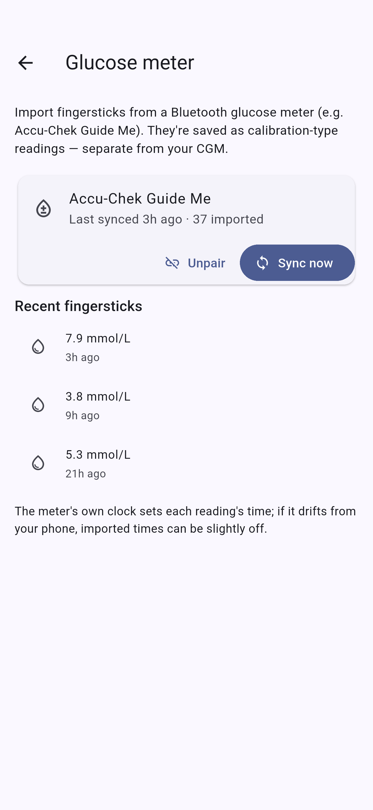
Settings → Glucose meter. Import fingerstick readings from a Bluetooth meter that speaks the standard Bluetooth Glucose Service — e.g. the Accu-Chek Guide / Guide Me (the same profile xDrip+ uses, so it isn't brand-specific). Imported readings are stored as calibration-type readings, kept distinct from your CGM.
- Pair — put the meter in Bluetooth pairing mode (usually after a reading, or by holding its button), tap Scan for meter, pick it from the list, and confirm the pairing on the meter.
- Sync now — pulls every reading the meter has stored since the last sync. It remembers each reading's sequence number, so re-syncing never imports a reading twice.
- Recent fingersticks — the latest imported readings in your unit, plus a running total.
- Unpair — forget the meter and reset the import history.
Therapy profile & basal suggestions
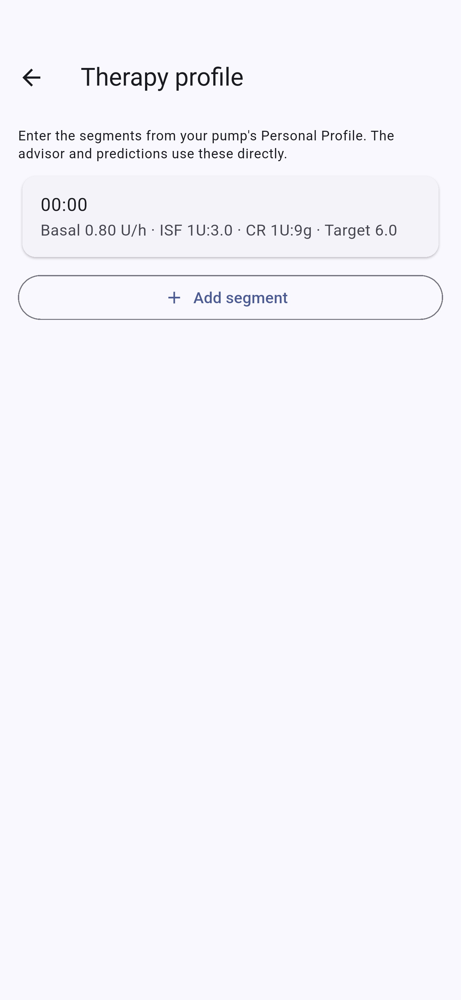
Therapy profile
Settings → Therapy profile. Your basal rate, ISF, carb ratio and target per time-of-day segment (imported from the pump, editable). These feed the what-if engine, bolus advisor and predictions — getting them right matters.
Basal suggestions
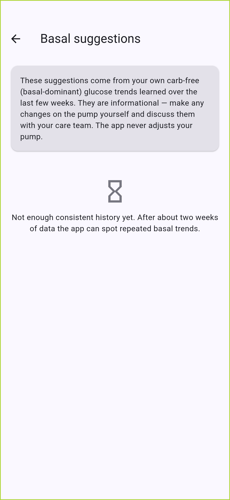
Settings → Basal suggestions. From repeated carb-free (fasting) time-of-day trends, per-segment basal changes with a confidence and a rationale. Advisory only — make any change on the pump yourself and discuss with your team. It never writes to the pump.
Advanced / model internals
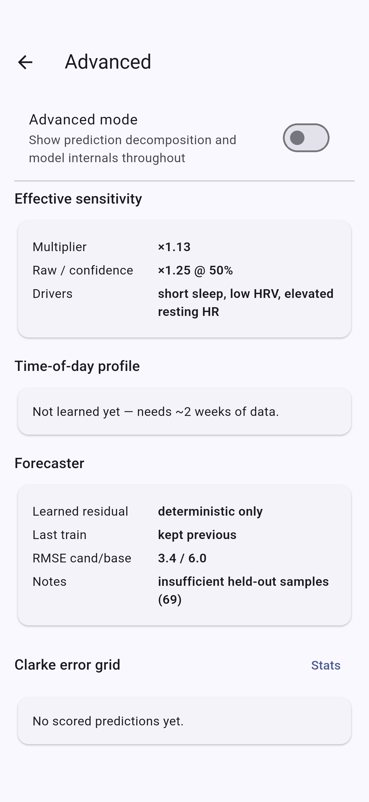
- Advanced mode (Settings switch) — surfaces prediction decomposition and model internals throughout.
- Model internals — effective sensitivity, the learned time-of-day profile, forecaster state and a Clarke error grid. Each time-of-day bucket also shows its observed minutes — the carb-free data actually behind that number, so a low-confidence or neutral bucket ("×1.00 (0%) · 0 min observed") explains itself instead of just looking untrained.
- Training data — a census of what the last training run actually had to work with: how many days were usable for the daily-sensitivity model out of how many were considered (a day is skipped if it doesn't have enough carb-free time to read cleanly), the forecaster's training-sample count per horizon, and what fraction of those samples carried real wearable (health data coverage) signal. Explains a decline-to-train or a "wear the sensor overnight to unlock the 02:00 bucket" style gap instead of it being invisible.
- Forecast accuracy — how predictions have scored against actual outcomes per horizon: RMSE, MARD (Mean Absolute Relative Difference — mean of |predicted−actual|/actual, as a percentage; the field-standard CGM/forecast accuracy number, so you can benchmark against the ~9–10% MARD literature bar), Clarke A+B, Parkes (Consensus) A+B (a newer, more widely-accepted clinical error grid graded the same way — both are shown so you can compare), hypo sensitivity ("—" when the window had no lows to detect), band coverage (what fraction of actuals landed inside the predicted range — a well-calibrated band should catch roughly its nominal confidence level) and bias (mean signed error in mg/dL; positive means the forecast runs high, negative means it runs low, 0 is perfectly centred).
- Retrain forecaster now — rebuild the learned correction from your history. A retrain also runs automatically about once a day at startup, and a new model is only promoted if it passes the safety gate and beats both the physics baseline and the currently active model on the same held-out data — so a retrain can never make the live forecast worse. The card shows the candidate / baseline / active RMSE from the last run and why a candidate was kept or rejected.
- System health — at-a-glance last-success time and failure count for the background subsystems that otherwise fail silently: health data sync, forecaster training, prediction reconciliation, Garmin watch delivery, weather, and the nutrition-label model download. A row shows a grey question mark when that subsystem has never run yet (a fresh install, or demo mode, where several never run) — this is deliberately distinct from a green check, since "hasn't run" is not the same claim as "verified healthy". Once it has actually run at least once, a row turns red if it's failed at least once since its last success, so a recurring problem (e.g. weather stuck failing every fetch) is visible before it quietly degrades forecasts. A row turns amber when it hasn't failed but hasn't succeeded recently either — the most common way a background job actually breaks is by silently no longer being scheduled at all (an OS kill, a cancelled task), which never shows up as a failure count. Health sync, prediction reconciliation, and forecaster training go amber after roughly two days with no successful run; Garmin watch delivery (which updates roughly every CGM reading) goes amber after about 15 minutes of no successful send. Weather and the nutrition-label model download never go amber — weather has no fixed refresh schedule to compare against, and the model download is a one-time action, not a recurring job. Garmin's row is native-tracked and resets each time the app restarts (so it reads grey question-mark again on every fresh launch until the first send); the rest persist across restarts.
- Diagnostics log — a read-only, on-device log of recent errors and events (the last ~500). It exists so a problem that would otherwise be invisible — an alert that failed to send, a startup job that didn't run — leaves a trace you can read (and Copy for a bug report or Clear). If the app ever crashed, a Last crash card is pinned on top with the persisted stack trace (it survives the app dying — including native crashes in the pump service) so an overnight failure is visible next morning; copy or dismiss it. Nothing here is ever sent anywhere on its own.
Profile
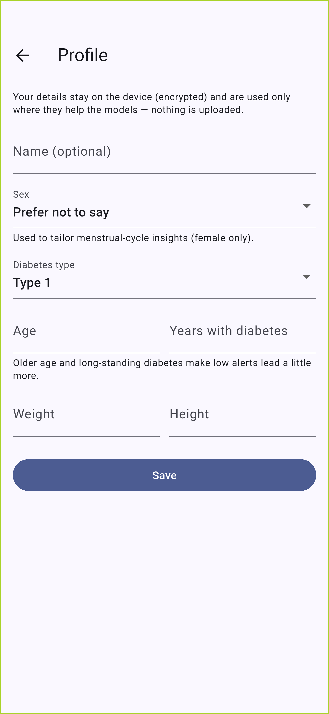
Settings → Profile. All optional, encrypted, on-device.
- Sex — gates the menstrual-cycle features (they only apply when there's a cycle).
- Age & years with diabetes — older age and long-standing diabetes make low alerts lead a little earlier (impaired-awareness risk).
- Weight / height — reference (BMI).
Settings & integrations
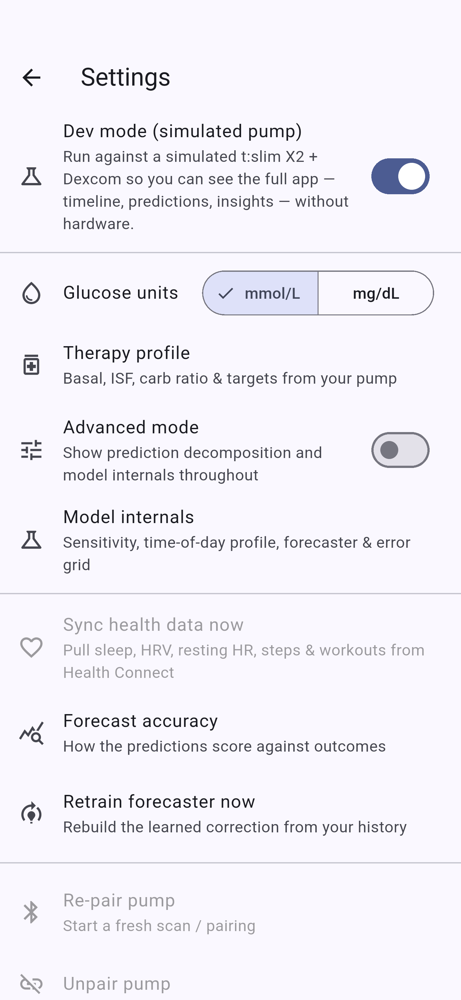
Everything not on a tab lives in Settings. Beyond the screens above:
- Demo mode — when active (chosen during onboarding), a status row here lets you Exit back to your real pump. There's no switch to turn it on; that only happens in onboarding.
- Keep running in background — Android's battery saver can delay readings and alerts while the phone sleeps; this row asks Android to exempt bgdude (one-time system dialog, also offered during onboarding) and shows whether it's granted. Recommended for reliable overnight monitoring.
- Allow exact alarms — only appears when the pre-bolus timer (see Meals) can't get an exact-alarm grant from Android (revocable on Android 13, denied by default on Android 14+ for new installs). Without it, the timer falls back to an inexact alarm that can fire 30–40 minutes late while the phone is idle — late enough to miss the meal it was timed for. Tap to open Android's exact-alarm settings screen and grant it; the row disappears once granted, so it never nags after being addressed.
- Glucose units — mmol/L (Australian default) or mg/dL. You pick this during onboarding; change it here any time and the whole app follows.
- Sync health data now — pull sleep, HRV, resting/continuous HR, steps and workouts from Health Connect. If Health Connect can't be reached, a snackbar says so instead of the sync silently failing.
- Barcode food lookup — the online food-lookup switch (see Meals).
- Nutrition-label AI — optionally download a small on-device model (Gemma, ~0.5 GB) that helps the label scanner read unusual or foreign-language panels. Paste a Gemma 3 1B
.taskmodel URL (Gemma is licence-gated, so it isn't bundled) with an access token if the host needs one; it downloads once and runs entirely on your phone. Everything works without it — the deterministic parser is the always-on path. - Re-pair / Unpair pump — start a fresh scan or drop the pairing.
- Nightscout — optional upload of entries, treatments and device status; enter your site URL + API secret and Test connection.
Storage recovery. If encrypted local storage fails to open (a mismatched key after restoring a backup, file damage, a temporary failure reading the saved key from secure storage — e.g. right after an OS update — or this app build being older than the data, e.g. after sideloading an older version), a banner appears explaining what's wrong and the app keeps running without saving until you act. Tap the banner for the recovery screen: retry opening, export what's still readable (only offered when some data may have survived), or a destructive, twice-confirmed reset storage (not offered when the real fix is installing a newer app build — there's nothing to reset). Reset never deletes the old file outright — it's renamed aside on disk in case it turns out to be recoverable later, and only then is a fresh empty store created.
Safety & scope
- Predictions and suggestions are informational and can be wrong; they never replace your CGM/pump alarms or clinical advice.
- The bolus advisor shows its working and leans conservative near lows.
- This is a personal tool, not a medical device. Pairing with the pump unpairs the official app.